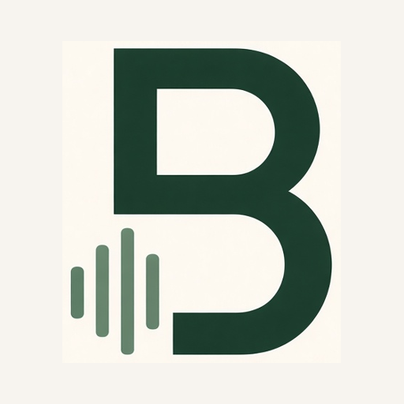

BndrmDESKTOPPLAY TOGETHER.
Your songs.
Your computer.
Prepare your band’s tracks here. Everyone joins through Bndrm on their phone.
Getting ready
Checking your connection…
Sign in to Bndrm, choose your band, and approve this code:
The code expires in 10 minutes.Processor activity
Keep Bndrm Desktop open while songs process. Quitting Bndrm stops processing; saved results stay on this computer for recovery. Model downloads happen on first use. Review musical estimates before playing.